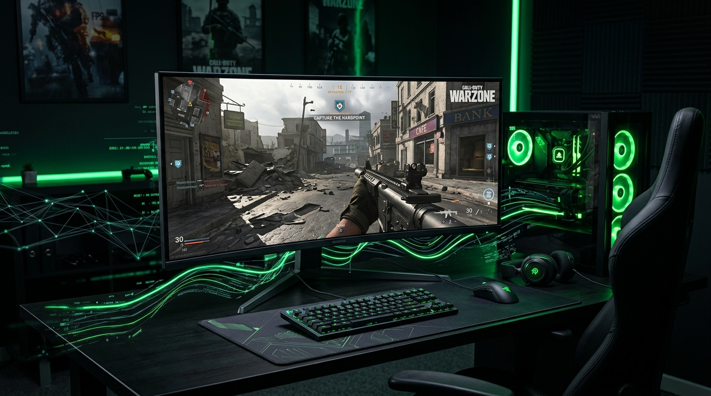

Call of Duty: Warzone, haritada 100'den fazla oyuncunun anlık konum ve mermi verisini saniyeler içinde işleyen devasa bir ağ altyapısına sahiptir. Ancak Activision'ın sunucu optimizasyonları ve agresif eşleştirme sistemi (SBMM) nedeniyle, internetiniz çok iyi olsa bile kendinizi sürekli 90-100 ms pingle oynarken bulabilirsiniz.
Warzone'da anlık takılmaları ve yüksek pingi çözmek için uygulamanız gereken profesyonel ağ ayarlarını adım adım derledik.
1. SBMM (Yetenek Bazlı Eşleştirme) Tuzağından Kurtulun
Warzone'un en büyük ping sebebi SBMM (Skill Based Matchmaking) sistemidir. Sistem sizi size en yakın sunucuya (örneğin Avrupa) atmak yerine, sizinle aynı yetenek seviyesindeki oyuncuları bulmak için okyanus ötesindeki sunuculara bile bağlayabilir.
2. NAT Tipinizi (Ağ Çevirisi) 'Open' Yapın
Oyun içi ayarlara girdiğinizde "Ağ" (Network) sekmesinde NAT Tipinizin ne olduğuna bakın. Eğer Strict (Sıkı) veya Moderate (Orta) yazıyorsa, modeminiz oyun paketlerini filtreliyor ve geciktiriyor demektir. Pingi düşürmek için bunun Open (Açık) olması gerekir.
- Modem arayüzünüze (192.168.1.1) giriş yapın.
- UPnP (Evrensel Tak ve Çalıştır) ayarını bulun ve Aktif hale getirin.
- Hala 'Open' olmuyorsa, modeminizden Warzone için gerekli portları (TCP: 3074, 27014-27050 / UDP: 3074, 3478, 4379-4380) manuel olarak açmanız gerekir.
3. Doku Akışını (On-Demand Texture Streaming) Kapatın
Warzone grafik ayarlarında yer alan "On-Demand Texture Streaming" özelliği, siz oyundayken yüksek çözünürlüklü kaplamaları internetten canlı olarak indirir. Bu, tam çatışma ortasında internetinizin aniden yavaşlamasına ve pingin fırlamasına (Packet Burst) sebep olur.
Grafik Ayarları > Kalite menüsüne gidin ve bu özelliği tamamen kapatın veya limitini günlük 1 GB gibi çok düşük bir değere çekin.
4. Geofencing (Bölge Sınırlama) Yönlendiricileri Kullanın
Eğer bütçeniz elveriyorsa, Netduma veya DumaOS destekli bir oyuncu yönlendiricisi (Router) edinebilirsiniz. Bu sistemlerde "Geofencing" özelliği bulunur. Harita üzerinden örneğin "Beni sadece Frankfurt sunucularına bağla, ötesine bağlanmayı reddet" diyebilirsiniz. Oyun sizi Amerika sunucusuna atmaya çalışsa bile Router bunu engeller ve 30-40 ms ping ile oynamayı garantilersiniz.